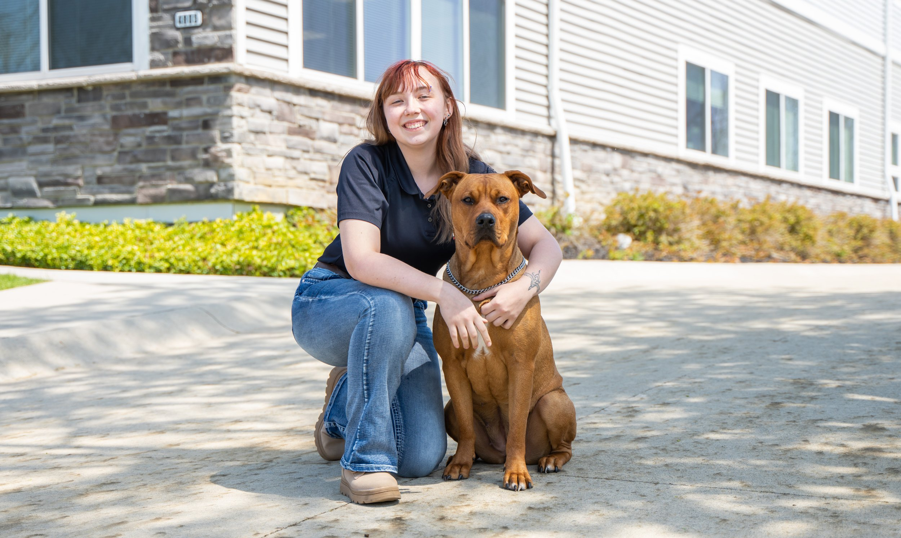

Harley McGrew
Cleveland Heights, OH
Harley began as an LDTT client and now focuses on misunderstood dogs, large breeds, and aggression-related behavior challenges.

Cleveland Heights, OH
Harley began as an LDTT client and now focuses on misunderstood dogs, large breeds, and aggression-related behavior challenges.
Harley McGrew was born in Toledo, Ohio, raised in Oak Harbor, Ohio, and currently resides in Cleveland Heights, Ohio. Growing up with a lifelong love for dogs, Harley developed a passion for understanding canine behavior and helping dogs become successful members of their families and communities. Harley's journey with Lorenzo's Dog Training Team began as a client.
After experiencing multiple unsuccessful attempts with traditional pet store training programs and facing challenges with a dog that was ultimately removed from a daycare program, Harley knew a different approach was needed. Encouraged by a family friend who had previously worked with Lorenzo's Dog Training Team, Harley enrolled as a client and quickly experienced firsthand the effectiveness of the training philosophy. What stood out most was the hands-on nature of the program and the emphasis on involving owners throughout the training process.
Inspired by the results and the opportunity to make a meaningful difference in the lives of dogs and their families, Harley decided to pursue a career in professional dog training with Lorenzo's Dog Training Team. Harley's mission as a trainer is centered on helping dogs that are often misunderstood, particularly large breeds and dogs struggling with aggression-related behaviors. Harley is passionate about giving these dogs the structure, guidance, and opportunities they need to succeed while helping owners build safe, confident, and lasting relationships with their pets.
Additionally, Harley hopes to play a role in helping long-term shelter dogs find stable, loving homes where they can thrive. When not working with dogs, Harley enjoys spending time outdoors and visiting the park with personal dogs. This everyday connection with dogs continues to fuel a passion for training and reinforces the belief that every dog deserves the opportunity to live a balanced and fulfilling life.
Through dedication, personal experience, and a genuine commitment to helping both dogs and their owners succeed, Harley is proud to be part of Lorenzo's Dog Training Team and looks forward to creating lasting transformations for families and their canine companions.
Send your request directly to Lorenzo's office with Harley McGrew already assigned as the source trainer.